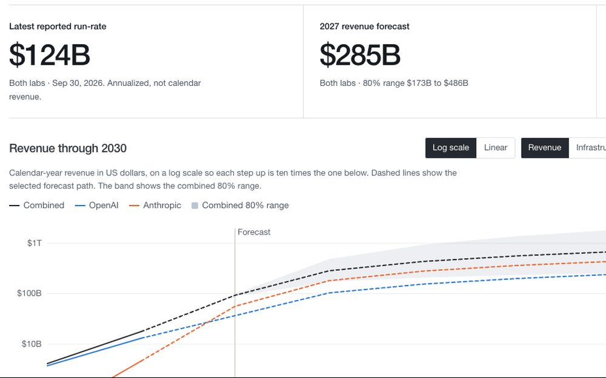
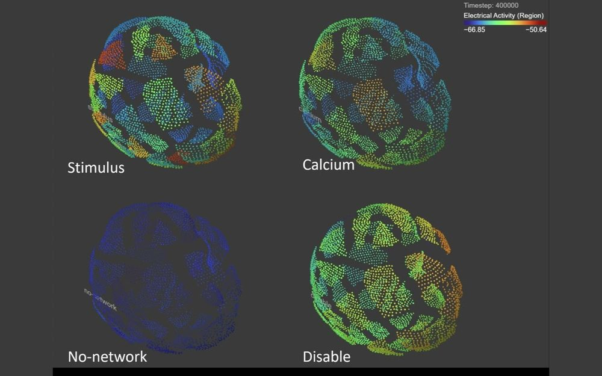

The Neocloud Guide
2026
A guide to the companies that rent GPUs and other AI accelerators, with a map of who supplies whom, a timeline, current H100 prices and profiles of 97 providers.
2026
A guide to the companies that rent GPUs and other AI accelerators, with a map of who supplies whom, a timeline, current H100 prices and profiles of 97 providers.

2026
A map of how each state treats datacenter development in 2026, with local moratoriums, public pushback and a siting model that ranks states for new projects.

2026
A listings site for AI data centers, laid out like a real estate search, with 94 frontier campuses and 30 signed AI leases priced as rent per kW a month.

2026
An interactive model that asks whether AI revenue can pay for the AI buildout, starting from OpenAI and Anthropic revenue forecasts through 2030.

2026
A 3D teardown of the NVIDIA B200 that traces its components to the firms, countries and materials they depend on.

Stanford Student Robotics, 2024
Scaling conservation data for an endangered species with autonomous drones.

CS 109, Stanford, 2024
An interactive simulation of how people update their beliefs from private information and the choices of others.
